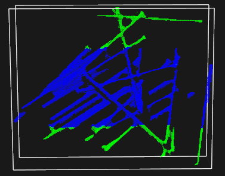
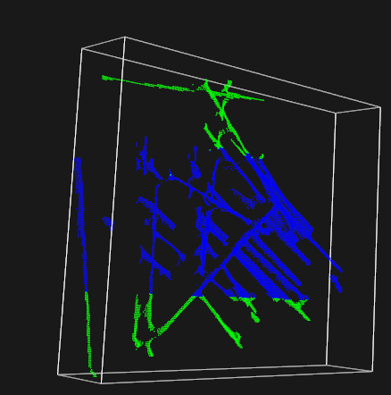

<!DOCTYPE html>


<html lang="zh-CN">
  

    <head>
      <meta charset="utf-8" />
        
      <meta name="description" content="Over top clear mind" />
      
      <meta
        name="viewport"
        content="width=device-width, initial-scale=1, maximum-scale=1"
      />
      <title>PCL cropBox note |  摸鱼且很菜blog</title>
  <meta name="generator" content="hexo-theme-ayer">
      
      <link rel="shortcut icon" href="/yu_head.gif" />
       
<link rel="stylesheet" href="/dist/main.css">

      
<link rel="stylesheet" href="/css/fonts/remixicon.css">

      
<link rel="stylesheet" href="/css/custom.css">
 
      <script src="https://cdn.staticfile.org/pace/1.2.4/pace.min.js"></script>
       
 

      <link
        rel="stylesheet"
        href="https://cdn.jsdelivr.net/npm/@sweetalert2/theme-bulma@5.0.1/bulma.min.css"
      />
      <script src="https://cdn.jsdelivr.net/npm/sweetalert2@11.0.19/dist/sweetalert2.min.js"></script>

      <!-- mermaid -->
      
      <style>
        .swal2-styled.swal2-confirm {
          font-size: 1.6rem;
        }
      </style>
    </head>
  </html>
</html>


<body>
  <div id="app">
    
      <canvas class="fireworks"></canvas>
      <style>
        .fireworks {
          position: fixed;
          left: 0;
          top: 0;
          z-index: 99999;
          pointer-events: none;
        }
      </style>
      
      
    <main class="content on">
      <section class="outer">
  <article
  id="post-PCL-cropBox-note"
  class="article article-type-post"
  itemscope
  itemprop="blogPost"
  data-scroll-reveal
>
  <div class="article-inner">
    
    <header class="article-header">
       
<h1 class="article-title sea-center" style="border-left:0" itemprop="name">
  PCL cropBox note
</h1>
 

      
    </header>
     
    <div class="article-meta">
      <a href="/2021/05/27/PCL-cropBox-note/" class="article-date">
  <time datetime="2021-05-27T15:01:40.000Z" itemprop="datePublished">2021-05-27</time>
</a>   
<div class="word_count">
    <span class="post-time">
        <span class="post-meta-item-icon">
            <i class="ri-quill-pen-line"></i>
            <span class="post-meta-item-text"> 字数统计:</span>
            <span class="post-count">1.3k</span>
        </span>
    </span>

    <span class="post-time">
        &nbsp; | &nbsp;
        <span class="post-meta-item-icon">
            <i class="ri-book-open-line"></i>
            <span class="post-meta-item-text"> 阅读时长≈</span>
            <span class="post-count">6 分钟</span>
        </span>
    </span>
</div>
 
    </div>
      
    <div class="tocbot"></div>


  
    <div class="article-entry" itemprop="articleBody">
       
  <h1 id="cropBox的使用"><a href="#cropBox的使用" class="headerlink" title="cropBox的使用"></a>cropBox的使用</h1><p>CropBox 常用于点云立方体滤波<br><span id="more"></span></p>
<p>添加<code>#include &lt;pcl/filters/crop_box.h&gt;</code></p>
<p>源码阅读</p>
<figure class="highlight cpp"><table><tr><td class="gutter"><pre><span class="line">1</span><br><span class="line">2</span><br><span class="line">3</span><br><span class="line">4</span><br><span class="line">5</span><br><span class="line">6</span><br><span class="line">7</span><br><span class="line">8</span><br><span class="line">9</span><br><span class="line">10</span><br><span class="line">11</span><br><span class="line">12</span><br><span class="line">13</span><br><span class="line">14</span><br><span class="line">15</span><br><span class="line">16</span><br><span class="line">17</span><br><span class="line">18</span><br><span class="line">19</span><br><span class="line">20</span><br><span class="line">21</span><br><span class="line">22</span><br><span class="line">23</span><br><span class="line">24</span><br><span class="line">25</span><br><span class="line">26</span><br><span class="line">27</span><br><span class="line">28</span><br><span class="line">29</span><br><span class="line">30</span><br><span class="line">31</span><br><span class="line">32</span><br><span class="line">33</span><br><span class="line">34</span><br><span class="line">35</span><br><span class="line">36</span><br><span class="line">37</span><br><span class="line">38</span><br><span class="line">39</span><br><span class="line">40</span><br><span class="line">41</span><br><span class="line">42</span><br><span class="line">43</span><br><span class="line">44</span><br><span class="line">45</span><br><span class="line">46</span><br><span class="line">47</span><br><span class="line">48</span><br><span class="line">49</span><br><span class="line">50</span><br><span class="line">51</span><br><span class="line">52</span><br><span class="line">53</span><br><span class="line">54</span><br><span class="line">55</span><br><span class="line">56</span><br><span class="line">57</span><br><span class="line">58</span><br><span class="line">59</span><br><span class="line">60</span><br><span class="line">61</span><br><span class="line">62</span><br><span class="line">63</span><br><span class="line">64</span><br><span class="line">65</span><br><span class="line">66</span><br><span class="line">67</span><br><span class="line">68</span><br><span class="line">69</span><br><span class="line">70</span><br><span class="line">71</span><br><span class="line">72</span><br><span class="line">73</span><br><span class="line">74</span><br><span class="line">75</span><br><span class="line">76</span><br><span class="line">77</span><br><span class="line">78</span><br><span class="line">79</span><br><span class="line">80</span><br><span class="line">81</span><br><span class="line">82</span><br><span class="line">83</span><br><span class="line">84</span><br><span class="line">85</span><br><span class="line">86</span><br><span class="line">87</span><br><span class="line">88</span><br><span class="line">89</span><br><span class="line">90</span><br><span class="line">91</span><br><span class="line">92</span><br><span class="line">93</span><br><span class="line">94</span><br><span class="line">95</span><br><span class="line">96</span><br><span class="line">97</span><br><span class="line">98</span><br><span class="line">99</span><br><span class="line">100</span><br><span class="line">101</span><br><span class="line">102</span><br><span class="line">103</span><br><span class="line">104</span><br><span class="line">105</span><br><span class="line">106</span><br><span class="line">107</span><br><span class="line">108</span><br><span class="line">109</span><br><span class="line">110</span><br><span class="line">111</span><br><span class="line">112</span><br><span class="line">113</span><br><span class="line">114</span><br><span class="line">115</span><br><span class="line">116</span><br><span class="line">117</span><br><span class="line">118</span><br><span class="line">119</span><br><span class="line">120</span><br><span class="line">121</span><br><span class="line">122</span><br><span class="line">123</span><br><span class="line">124</span><br><span class="line">125</span><br><span class="line">126</span><br><span class="line">127</span><br><span class="line">128</span><br><span class="line">129</span><br><span class="line">130</span><br><span class="line">131</span><br><span class="line">132</span><br><span class="line">133</span><br><span class="line">134</span><br><span class="line">135</span><br><span class="line">136</span><br><span class="line">137</span><br><span class="line">138</span><br><span class="line">139</span><br><span class="line">140</span><br><span class="line">141</span><br><span class="line">142</span><br><span class="line">143</span><br><span class="line">144</span><br><span class="line">145</span><br><span class="line">146</span><br><span class="line">147</span><br><span class="line">148</span><br><span class="line">149</span><br><span class="line">150</span><br><span class="line">151</span><br><span class="line">152</span><br><span class="line">153</span><br><span class="line">154</span><br><span class="line">155</span><br><span class="line">156</span><br><span class="line">157</span><br><span class="line">158</span><br><span class="line">159</span><br><span class="line">160</span><br><span class="line">161</span><br><span class="line">162</span><br><span class="line">163</span><br><span class="line">164</span><br><span class="line">165</span><br><span class="line">166</span><br><span class="line">167</span><br><span class="line">168</span><br><span class="line">169</span><br><span class="line">170</span><br><span class="line">171</span><br><span class="line">172</span><br><span class="line">173</span><br><span class="line">174</span><br><span class="line">175</span><br><span class="line">176</span><br><span class="line">177</span><br><span class="line">178</span><br><span class="line">179</span><br><span class="line">180</span><br><span class="line">181</span><br><span class="line">182</span><br><span class="line">183</span><br><span class="line">184</span><br><span class="line">185</span><br><span class="line">186</span><br><span class="line">187</span><br><span class="line">188</span><br><span class="line">189</span><br><span class="line">190</span><br><span class="line">191</span><br><span class="line">192</span><br><span class="line">193</span><br><span class="line">194</span><br><span class="line">195</span><br><span class="line">196</span><br><span class="line">197</span><br><span class="line">198</span><br></pre></td><td class="code"><pre><span class="line"><span class="class"><span class="keyword">class</span> <span class="title">CropBox</span> :</span> <span class="keyword">public</span> FilterIndices&lt;PointT&gt;</span><br><span class="line">  &#123;</span><br><span class="line">    <span class="keyword">using</span> Filter&lt;PointT&gt;::getClassName;</span><br><span class="line"></span><br><span class="line">    <span class="keyword">using</span> PointCloud = <span class="keyword">typename</span> Filter&lt;PointT&gt;::PointCloud;</span><br><span class="line">    <span class="keyword">using</span> PointCloudPtr = <span class="keyword">typename</span> PointCloud::Ptr;</span><br><span class="line">    <span class="keyword">using</span> PointCloudConstPtr = <span class="keyword">typename</span> PointCloud::ConstPtr;</span><br><span class="line"></span><br><span class="line">    <span class="keyword">public</span>:</span><br><span class="line"></span><br><span class="line">      <span class="keyword">using</span> Ptr = shared_ptr&lt;CropBox&lt;PointT&gt; &gt;;</span><br><span class="line">      <span class="keyword">using</span> ConstPtr = shared_ptr&lt;<span class="keyword">const</span> CropBox&lt;PointT&gt; &gt;;</span><br><span class="line"></span><br><span class="line">      <span class="comment">/** \brief Constructor.</span></span><br><span class="line"><span class="comment">        * \param[in] extract_removed_indices Set to true if you want to be able to extract the indices of points being removed (default = false).</span></span><br><span class="line"><span class="comment">        */</span></span><br><span class="line">      <span class="built_in">CropBox</span> (<span class="keyword">bool</span> extract_removed_indices = <span class="literal">false</span>) :</span><br><span class="line">        FilterIndices&lt;PointT&gt; (extract_removed_indices),</span><br><span class="line">        <span class="built_in">min_pt_</span> (Eigen::<span class="built_in">Vector4f</span> (<span class="number">-1</span>, <span class="number">-1</span>, <span class="number">-1</span>, <span class="number">1</span>)),</span><br><span class="line">        <span class="built_in">max_pt_</span> (Eigen::<span class="built_in">Vector4f</span> (<span class="number">1</span>, <span class="number">1</span>, <span class="number">1</span>, <span class="number">1</span>)),</span><br><span class="line">        <span class="built_in">rotation_</span> (Eigen::Vector3f::<span class="built_in">Zero</span> ()),</span><br><span class="line">        <span class="built_in">translation_</span> (Eigen::Vector3f::<span class="built_in">Zero</span> ()),</span><br><span class="line">        <span class="built_in">transform_</span> (Eigen::Affine3f::<span class="built_in">Identity</span> ())</span><br><span class="line">      &#123;</span><br><span class="line">        filter_name_ = <span class="string">&quot;CropBox&quot;</span>;</span><br><span class="line">      &#125;</span><br><span class="line">    <span class="comment">//设置box中最小的点</span></span><br><span class="line">     <span class="function"><span class="keyword">inline</span> <span class="keyword">void</span></span></span><br><span class="line"><span class="function">      <span class="title">setMin</span> <span class="params">(<span class="keyword">const</span> Eigen::Vector4f &amp;min_pt)</span></span></span><br><span class="line"><span class="function">      </span>&#123;</span><br><span class="line">        min_pt_ = min_pt;</span><br><span class="line">      &#125;</span><br><span class="line">    <span class="comment">//返回box中的最小点</span></span><br><span class="line">     <span class="function"><span class="keyword">inline</span> Eigen::Vector4f</span></span><br><span class="line"><span class="function">      <span class="title">getMin</span> <span class="params">()</span> <span class="keyword">const</span></span></span><br><span class="line"><span class="function">      </span>&#123;</span><br><span class="line">        <span class="keyword">return</span> (min_pt_);</span><br><span class="line">      &#125;</span><br><span class="line">    <span class="comment">//与box中最大点有关</span></span><br><span class="line">     <span class="function"><span class="keyword">inline</span> <span class="keyword">void</span></span></span><br><span class="line"><span class="function">      <span class="title">setMax</span> <span class="params">(<span class="keyword">const</span> Eigen::Vector4f &amp;max_pt)</span></span></span><br><span class="line"><span class="function">      </span>&#123;</span><br><span class="line">        max_pt_ = max_pt;</span><br><span class="line">      &#125;</span><br><span class="line"></span><br><span class="line">      <span class="comment">/** \brief Get the value of the maximum point of the box, as set by the user</span></span><br><span class="line"><span class="comment">        * \return the value of the internal \a max_pt parameter.</span></span><br><span class="line"><span class="comment">        */</span></span><br><span class="line">      <span class="function"><span class="keyword">inline</span> Eigen::Vector4f</span></span><br><span class="line"><span class="function">      <span class="title">getMax</span> <span class="params">()</span> <span class="keyword">const</span></span></span><br><span class="line"><span class="function">      </span>&#123;</span><br><span class="line">        <span class="keyword">return</span> (max_pt_);</span><br><span class="line">      &#125;</span><br><span class="line">    <span class="comment">//设置位移分量 (tx,ty,tz)</span></span><br><span class="line">    <span class="function"><span class="keyword">inline</span> <span class="keyword">void</span></span></span><br><span class="line"><span class="function">      <span class="title">setTranslation</span> <span class="params">(<span class="keyword">const</span> Eigen::Vector3f &amp;translation)</span></span></span><br><span class="line"><span class="function">      </span>&#123;</span><br><span class="line">        translation_ = translation;</span><br><span class="line">      &#125;</span><br><span class="line">    <span class="function"><span class="keyword">inline</span> <span class="keyword">void</span></span></span><br><span class="line"><span class="function">      <span class="title">setRotation</span> <span class="params">(<span class="keyword">const</span> Eigen::Vector3f &amp;rotation)</span></span></span><br><span class="line"><span class="function">      </span>&#123;</span><br><span class="line">        rotation_ = rotation;</span><br><span class="line">      &#125;</span><br><span class="line">    </span><br><span class="line">     <span class="comment">//设置旋转向量(rx,ry,rz) </span></span><br><span class="line">      <span class="function"><span class="keyword">inline</span> <span class="keyword">void</span></span></span><br><span class="line"><span class="function">      <span class="title">setRotation</span> <span class="params">(<span class="keyword">const</span> Eigen::Vector3f &amp;rotation)</span></span></span><br><span class="line"><span class="function">      </span>&#123;</span><br><span class="line">        rotation_ = rotation;</span><br><span class="line">      &#125;</span><br><span class="line"></span><br><span class="line">      <span class="comment">/** \brief Get the value of the box rotatation parameter, as set by the user. */</span></span><br><span class="line">      <span class="function"><span class="keyword">inline</span> Eigen::Vector3f</span></span><br><span class="line"><span class="function">      <span class="title">getRotation</span> <span class="params">()</span> <span class="keyword">const</span></span></span><br><span class="line"><span class="function">      </span>&#123;</span><br><span class="line">        <span class="keyword">return</span> (rotation_);</span><br><span class="line">      &#125;</span><br><span class="line">    </span><br><span class="line">    <span class="comment">//通过提供变换矩阵</span></span><br><span class="line">      <span class="function"><span class="keyword">inline</span> <span class="keyword">void</span></span></span><br><span class="line"><span class="function">      <span class="title">setTransform</span> <span class="params">(<span class="keyword">const</span> Eigen::Affine3f &amp;transform)</span></span></span><br><span class="line"><span class="function">      </span>&#123;</span><br><span class="line">        transform_ = transform;</span><br><span class="line">      &#125;</span><br><span class="line"></span><br><span class="line">      <span class="comment">/** \brief Get the value of the transformation parameter, as set by the user. */</span></span><br><span class="line">      <span class="function"><span class="keyword">inline</span> Eigen::Affine3f</span></span><br><span class="line"><span class="function">      <span class="title">getTransform</span> <span class="params">()</span> <span class="keyword">const</span></span></span><br><span class="line"><span class="function">      </span>&#123;</span><br><span class="line">        <span class="keyword">return</span> (transform_);</span><br><span class="line">      &#125;</span><br><span class="line">    </span><br><span class="line">    <span class="keyword">protected</span>:</span><br><span class="line">      <span class="keyword">using</span> PCLBase&lt;PointT&gt;::input_;</span><br><span class="line">      <span class="keyword">using</span> PCLBase&lt;PointT&gt;::indices_;</span><br><span class="line">      <span class="keyword">using</span> Filter&lt;PointT&gt;::filter_name_;</span><br><span class="line">      <span class="keyword">using</span> FilterIndices&lt;PointT&gt;::negative_;</span><br><span class="line">      <span class="keyword">using</span> FilterIndices&lt;PointT&gt;::keep_organized_;</span><br><span class="line">      <span class="keyword">using</span> FilterIndices&lt;PointT&gt;::user_filter_value_;</span><br><span class="line">      <span class="keyword">using</span> FilterIndices&lt;PointT&gt;::extract_removed_indices_;</span><br><span class="line">      <span class="keyword">using</span> FilterIndices&lt;PointT&gt;::removed_indices_;</span><br><span class="line"></span><br><span class="line">      <span class="comment">/** \brief Sample of point indices</span></span><br><span class="line"><span class="comment">        * \param[out] indices the resultant point cloud indices</span></span><br><span class="line"><span class="comment">        */</span></span><br><span class="line">      <span class="function"><span class="keyword">void</span></span></span><br><span class="line"><span class="function">      <span class="title">applyFilter</span> <span class="params">(std::vector&lt;<span class="keyword">int</span>&gt; &amp;indices)</span> <span class="keyword">override</span></span>;</span><br><span class="line">    <span class="keyword">private</span>:</span><br><span class="line">      <span class="comment">/** \brief The minimum point of the box. */</span></span><br><span class="line">      Eigen::Vector4f min_pt_;</span><br><span class="line">      <span class="comment">/** \brief The maximum point of the box. */</span></span><br><span class="line">      Eigen::Vector4f max_pt_;</span><br><span class="line">      <span class="comment">/** \brief The 3D rotation for the box. */</span></span><br><span class="line">      Eigen::Vector3f rotation_;</span><br><span class="line">      <span class="comment">/** \brief The 3D translation for the box. */</span></span><br><span class="line">      Eigen::Vector3f translation_;</span><br><span class="line">      <span class="comment">/** \brief The affine transform applied to the cloud. */</span></span><br><span class="line">      Eigen::Affine3f transform_;</span><br><span class="line">  &#125;</span><br><span class="line"></span><br><span class="line"></span><br><span class="line"><span class="keyword">template</span>&lt;<span class="keyword">typename</span> PointT&gt; <span class="keyword">void</span></span><br><span class="line">pcl::CropBox&lt;PointT&gt;::<span class="built_in">applyFilter</span> (std::vector&lt;<span class="keyword">int</span>&gt; &amp;indices)</span><br><span class="line">&#123;</span><br><span class="line">  indices.<span class="built_in">resize</span> (input_-&gt;<span class="built_in">size</span> ());<span class="comment">//输入点云</span></span><br><span class="line">  removed_indices_-&gt;<span class="built_in">resize</span> (input_-&gt;<span class="built_in">size</span> ());<span class="comment">//要删除的点云</span></span><br><span class="line">  <span class="keyword">int</span> indices_count = <span class="number">0</span>;</span><br><span class="line">  <span class="keyword">int</span> removed_indices_count = <span class="number">0</span>;</span><br><span class="line"></span><br><span class="line">  Eigen::Affine3f transform = Eigen::Affine3f::<span class="built_in">Identity</span> ();<span class="comment">//RT变换矩阵</span></span><br><span class="line">  Eigen::Affine3f inverse_transform = Eigen::Affine3f::<span class="built_in">Identity</span> ();<span class="comment">//RT变换矩阵的逆</span></span><br><span class="line"></span><br><span class="line">    <span class="comment">//rotation_中是欧拉角 rx ry rz 将其变换成4*4 RT矩阵，位移部分为0，0，0</span></span><br><span class="line">  <span class="keyword">if</span> (rotation_ != Eigen::Vector3f::<span class="built_in">Zero</span> ())</span><br><span class="line">  &#123;</span><br><span class="line">    pcl::<span class="built_in">getTransformation</span> (<span class="number">0</span>, <span class="number">0</span>, <span class="number">0</span>,</span><br><span class="line">                            <span class="built_in">rotation_</span> (<span class="number">0</span>), <span class="built_in">rotation_</span> (<span class="number">1</span>), <span class="built_in">rotation_</span> (<span class="number">2</span>),</span><br><span class="line">                            transform);</span><br><span class="line">    inverse_transform = transform.<span class="built_in">inverse</span> ();</span><br><span class="line">  &#125;</span><br><span class="line"></span><br><span class="line">  <span class="comment">//RT矩阵是否是单位阵</span></span><br><span class="line">  <span class="keyword">bool</span> transform_matrix_is_identity = transform_.<span class="built_in">matrix</span> ().<span class="built_in">isIdentity</span> ();</span><br><span class="line">  <span class="comment">//位移分量是否全为0</span></span><br><span class="line">  <span class="keyword">bool</span> translation_is_zero = (translation_ == Eigen::Vector3f::<span class="built_in">Zero</span> ());</span><br><span class="line">  <span class="comment">//RT矩阵的逆是不是单位阵</span></span><br><span class="line">  <span class="keyword">bool</span> inverse_transform_matrix_is_identity = inverse_transform.<span class="built_in">matrix</span> ().<span class="built_in">isIdentity</span> ();</span><br><span class="line"></span><br><span class="line">  <span class="keyword">for</span> (<span class="keyword">const</span> <span class="keyword">auto</span> index : *indices_)</span><br><span class="line">  &#123;</span><br><span class="line">    <span class="keyword">if</span> (!input_-&gt;is_dense)<span class="comment">//检查该点的有效性</span></span><br><span class="line">      <span class="comment">// Check if the point is invalid</span></span><br><span class="line">      <span class="keyword">if</span> (!<span class="built_in">isFinite</span> ((*input_)[index]))<span class="comment">//检测点云的数据中是否包含NaN</span></span><br><span class="line">        <span class="keyword">continue</span>;</span><br><span class="line"></span><br><span class="line">    <span class="comment">// Get local point</span></span><br><span class="line">    PointT local_pt = (*input_)[index];</span><br><span class="line"></span><br><span class="line">    <span class="comment">//对local_pt左乘transform_ RT矩阵 进行旋转</span></span><br><span class="line">    <span class="comment">// Transform point to world space 将点云转换到世界空间</span></span><br><span class="line">    <span class="keyword">if</span> (!transform_matrix_is_identity)</span><br><span class="line">      local_pt = pcl::transformPoint&lt;PointT&gt; (local_pt, transform_);</span><br><span class="line">    <span class="comment">//对local_pt的X Y Z进行调整</span></span><br><span class="line">    <span class="keyword">if</span> (!translation_is_zero)</span><br><span class="line">    &#123;</span><br><span class="line">      local_pt.x -= <span class="built_in">translation_</span> (<span class="number">0</span>);</span><br><span class="line">      local_pt.y -= <span class="built_in">translation_</span> (<span class="number">1</span>);</span><br><span class="line">      local_pt.z -= <span class="built_in">translation_</span> (<span class="number">2</span>);</span><br><span class="line">    &#125;</span><br><span class="line">    <span class="comment">//将点云变换到裁剪框的局部空间</span></span><br><span class="line">    <span class="comment">// Transform point to local space of crop box</span></span><br><span class="line">    <span class="keyword">if</span> (!inverse_transform_matrix_is_identity)</span><br><span class="line">      local_pt = pcl::transformPoint&lt;PointT&gt; (local_pt, inverse_transform);</span><br><span class="line">     <span class="comment">//点是否在裁剪框外部</span></span><br><span class="line">    <span class="comment">// If outside the cropbox</span></span><br><span class="line">    <span class="keyword">if</span> ( (local_pt.x &lt; min_pt_[<span class="number">0</span>] || local_pt.y &lt; min_pt_[<span class="number">1</span>] || local_pt.z &lt; min_pt_[<span class="number">2</span>]) ||</span><br><span class="line">         (local_pt.x &gt; max_pt_[<span class="number">0</span>] || local_pt.y &gt; max_pt_[<span class="number">1</span>] || local_pt.z &gt; max_pt_[<span class="number">2</span>]))</span><br><span class="line">    &#123;</span><br><span class="line">      <span class="keyword">if</span> (negative_)</span><br><span class="line">        indices[indices_count++] = index;</span><br><span class="line">      <span class="keyword">else</span> <span class="keyword">if</span> (extract_removed_indices_)</span><br><span class="line">        (*removed_indices_)[removed_indices_count++] = <span class="keyword">static_cast</span>&lt;<span class="keyword">int</span>&gt; (index);</span><br><span class="line">    &#125;</span><br><span class="line">    <span class="comment">// If inside the cropbox</span></span><br><span class="line">    <span class="keyword">else</span></span><br><span class="line">    &#123;</span><br><span class="line">      <span class="keyword">if</span> (negative_ &amp;&amp; extract_removed_indices_)</span><br><span class="line">        (*removed_indices_)[removed_indices_count++] = <span class="keyword">static_cast</span>&lt;<span class="keyword">int</span>&gt; (index);</span><br><span class="line">      <span class="keyword">else</span> <span class="keyword">if</span> (!negative_) </span><br><span class="line">        indices[indices_count++] = index;</span><br><span class="line">    &#125;</span><br><span class="line">  &#125;</span><br><span class="line">  indices.<span class="built_in">resize</span> (indices_count);</span><br><span class="line">  removed_indices_-&gt;<span class="built_in">resize</span> (removed_indices_count);</span><br><span class="line">&#125;</span><br><span class="line"></span><br><span class="line"></span><br></pre></td></tr></table></figure>
<p>算子作用说明</p>
<p>1、初始化cropBox时，默认中心在原点处，生成一个，边长为2的正方体</p>
<figure class="highlight cpp"><table><tr><td class="gutter"><pre><span class="line">1</span><br><span class="line">2</span><br><span class="line">3</span><br><span class="line">4</span><br><span class="line">5</span><br><span class="line">6</span><br><span class="line">7</span><br><span class="line">8</span><br><span class="line">9</span><br><span class="line">10</span><br></pre></td><td class="code"><pre><span class="line"><span class="built_in">CropBox</span> (<span class="keyword">bool</span> extract_removed_indices = <span class="literal">false</span>) :</span><br><span class="line">        FilterIndices&lt;PointT&gt; (extract_removed_indices),</span><br><span class="line">        <span class="built_in">min_pt_</span> (Eigen::<span class="built_in">Vector4f</span> (<span class="number">-1</span>, <span class="number">-1</span>, <span class="number">-1</span>, <span class="number">1</span>)),</span><br><span class="line">        <span class="built_in">max_pt_</span> (Eigen::<span class="built_in">Vector4f</span> (<span class="number">1</span>, <span class="number">1</span>, <span class="number">1</span>, <span class="number">1</span>)),</span><br><span class="line">        <span class="built_in">rotation_</span> (Eigen::Vector3f::<span class="built_in">Zero</span> ()),</span><br><span class="line">        <span class="built_in">translation_</span> (Eigen::Vector3f::<span class="built_in">Zero</span> ()),</span><br><span class="line">        <span class="built_in">transform_</span> (Eigen::Affine3f::<span class="built_in">Identity</span> ())</span><br><span class="line">      &#123;</span><br><span class="line">        filter_name_ = <span class="string">&quot;CropBox&quot;</span>;</span><br><span class="line">      &#125;</span><br></pre></td></tr></table></figure>
<figure class="highlight cpp"><table><tr><td class="gutter"><pre><span class="line">1</span><br><span class="line">2</span><br><span class="line">3</span><br><span class="line">4</span><br><span class="line">5</span><br><span class="line">6</span><br><span class="line">7</span><br><span class="line">8</span><br></pre></td><td class="code"><pre><span class="line">pcl::CropBox&lt;pcl::PointXYZ&gt; box_filter2;<span class="comment">//滤波器对象</span></span><br><span class="line"></span><br><span class="line">	<span class="keyword">auto</span> rt= box_filter2.<span class="built_in">getTransform</span>();</span><br><span class="line">	<span class="keyword">auto</span> t = box_filter2.<span class="built_in">getTranslation</span>();</span><br><span class="line">	<span class="keyword">auto</span> r = box_filter2.<span class="built_in">getRotation</span>();</span><br><span class="line">	std::cout &lt;&lt; rt.<span class="built_in">matrix</span>() &lt;&lt; std::endl;<span class="comment">//4*4 单位阵</span></span><br><span class="line">	std::cout &lt;&lt; t.<span class="built_in">matrix</span>() &lt;&lt; std::endl;<span class="comment">//0 0 0</span></span><br><span class="line">	std::cout &lt;&lt; r.<span class="built_in">matrix</span>() &lt;&lt; std::endl;<span class="comment">//0 0 0</span></span><br></pre></td></tr></table></figure>
<p>2、将OBB的结果用于cropBox前，需要知道OBB与原点之间的转换关系，即RT矩阵，指的是先进行旋转，再平移</p>
<figure class="highlight cpp"><table><tr><td class="gutter"><pre><span class="line">1</span><br><span class="line">2</span><br><span class="line">3</span><br><span class="line">4</span><br><span class="line">5</span><br><span class="line">6</span><br><span class="line">7</span><br><span class="line">8</span><br><span class="line">9</span><br><span class="line">10</span><br><span class="line">11</span><br><span class="line">12</span><br><span class="line">13</span><br><span class="line">14</span><br><span class="line">15</span><br></pre></td><td class="code"><pre><span class="line"><span class="comment">//绘制点云OBB</span></span><br><span class="line">	pcl::PointXYZ min_point_OBB;</span><br><span class="line">	pcl::PointXYZ max_point_OBB;</span><br><span class="line">	pcl::PointXYZ position_OBB;</span><br><span class="line">	Eigen::Matrix3f rotational_matrix_OBB;</span><br><span class="line">	pcl::MomentOfInertiaEstimation &lt;pcl::PointXYZ&gt; estimBox;</span><br><span class="line">	estimBox.<span class="built_in">setInputCloud</span>(cloud);</span><br><span class="line">	estimBox.<span class="built_in">compute</span>();</span><br><span class="line">	estimBox.<span class="built_in">getOBB</span>(min_point_OBB, max_point_OBB, position_OBB, rotational_matrix_OBB);</span><br><span class="line"></span><br><span class="line">Eigen::Vector4f minPoints, maxPoints;</span><br><span class="line">	Eigen::Vector3f translasion = Eigen::<span class="built_in">Vector3f</span>(position_OBB.x, position_OBB.y, position_OBB.z);<span class="comment">//得到位移分量</span></span><br><span class="line">	Eigen::Vector3f eulerAngle = rotational_matrix_OBB.<span class="built_in">eulerAngles</span>(<span class="number">2</span>, <span class="number">1</span>, <span class="number">0</span>);<span class="comment">//将旋转矩阵转成欧拉角（Z-Y-X）z</span></span><br><span class="line"><span class="comment">//在cropBox使用的是（rx,ry,rz）而不是（rz,ry,rx）</span></span><br><span class="line">	Eigen::Vector3f eulerAngle2 = Eigen::<span class="built_in">Vector3f</span>(<span class="built_in">eulerAngle</span>(<span class="number">2</span>), <span class="built_in">eulerAngle</span>(<span class="number">1</span>), <span class="built_in">eulerAngle</span>(<span class="number">0</span>));</span><br></pre></td></tr></table></figure>
<p>3、进行立方体滤波</p>
<figure class="highlight cpp"><table><tr><td class="gutter"><pre><span class="line">1</span><br><span class="line">2</span><br><span class="line">3</span><br><span class="line">4</span><br><span class="line">5</span><br><span class="line">6</span><br><span class="line">7</span><br><span class="line">8</span><br><span class="line">9</span><br><span class="line">10</span><br></pre></td><td class="code"><pre><span class="line">pcl::CropBox&lt;pcl::PointXYZ&gt; box_filter;<span class="comment">//滤波器对象</span></span><br><span class="line">	minPoints = Eigen::<span class="built_in">Vector4f</span>(min_point_OBB.x,min_point_OBB.y*<span class="number">0.5</span>,min_point_OBB.z,<span class="number">1.0f</span>);</span><br><span class="line">	maxPoints = Eigen::<span class="built_in">Vector4f</span>(max_point_OBB.x, max_point_OBB.y*<span class="number">0.5</span>, max_point_OBB.z, <span class="number">1.0f</span>);</span><br><span class="line">	box_filter.<span class="built_in">setInputCloud</span>(cloud);</span><br><span class="line">	box_filter.<span class="built_in">setMin</span>(minPoints);<span class="comment">//在y方向上收缩了一半</span></span><br><span class="line">	box_filter.<span class="built_in">setMax</span>(maxPoints);</span><br><span class="line">	box_filter.<span class="built_in">setTranslation</span>(translasion);<span class="comment">//点在原始坐标系下的坐标</span></span><br><span class="line">	box_filter.<span class="built_in">setRotation</span>(eulerAngle2);<span class="comment">//rx,ry,rz</span></span><br><span class="line">	box_filter.<span class="built_in">setNegative</span>(<span class="literal">false</span>);<span class="comment">//保留OBB框内的点</span></span><br><span class="line">	box_filter.<span class="built_in">filter</span>(*flit);</span><br></pre></td></tr></table></figure>
<p>4、结果</p>
<p></p>
<p></p>
 
      <!-- reward -->
      
    </div>
    

    <!-- copyright -->
    
    <div class="declare">
      <ul class="post-copyright">
        <li>
          <i class="ri-copyright-line"></i>
          <strong>版权声明： </strong>
          
          本博客所有文章除特别声明外，著作权归作者所有。转载请注明出处！
          
        </li>
      </ul>
    </div>
    
    <footer class="article-footer">
       
<div class="share-btn">
      <span class="share-sns share-outer">
        <i class="ri-share-forward-line"></i>
        分享
      </span>
      <div class="share-wrap">
        <i class="arrow"></i>
        <div class="share-icons">
          
          <a class="weibo share-sns" href="javascript:;" data-type="weibo">
            <i class="ri-weibo-fill"></i>
          </a>
          <a class="weixin share-sns wxFab" href="javascript:;" data-type="weixin">
            <i class="ri-wechat-fill"></i>
          </a>
          <a class="qq share-sns" href="javascript:;" data-type="qq">
            <i class="ri-qq-fill"></i>
          </a>
          <a class="douban share-sns" href="javascript:;" data-type="douban">
            <i class="ri-douban-line"></i>
          </a>
          <!-- <a class="qzone share-sns" href="javascript:;" data-type="qzone">
            <i class="icon icon-qzone"></i>
          </a> -->
          
          <a class="facebook share-sns" href="javascript:;" data-type="facebook">
            <i class="ri-facebook-circle-fill"></i>
          </a>
          <a class="twitter share-sns" href="javascript:;" data-type="twitter">
            <i class="ri-twitter-fill"></i>
          </a>
          <a class="google share-sns" href="javascript:;" data-type="google">
            <i class="ri-google-fill"></i>
          </a>
        </div>
      </div>
</div>

<div class="wx-share-modal">
    <a class="modal-close" href="javascript:;"><i class="ri-close-circle-line"></i></a>
    <p>扫一扫，分享到微信</p>
    <div class="wx-qrcode">
      
    </div>
</div>

<div id="share-mask"></div>  
  <ul class="article-tag-list" itemprop="keywords"><li class="article-tag-list-item"><a class="article-tag-list-link" href="/tags/PCL/" rel="tag">PCL</a></li></ul>

    </footer>
  </div>

   
  <nav class="article-nav">
    
      <a href="/2021/06/01/LINUX%E4%B8%8BCpp%E5%BC%80%E5%8F%91%E5%9F%BA%E6%9C%AC%E8%AF%AD%E5%8F%A5/" class="article-nav-link">
        <strong class="article-nav-caption">上一篇</strong>
        <div class="article-nav-title">
          
            LINUX下Cpp开发基本语句
          
        </div>
      </a>
    
    
      <a href="/2021/05/27/pcl-study-note/" class="article-nav-link">
        <strong class="article-nav-caption">下一篇</strong>
        <div class="article-nav-title">PCL study note</div>
      </a>
    
  </nav>

  
   
    
    <script src="https://cdn.staticfile.org/twikoo/1.4.18/twikoo.all.min.js"></script>
    <div id="twikoo" class="twikoo"></div>
    <script>
        twikoo.init({
            envId: ""
        })
    </script>
 
</article>

</section>
      <footer class="footer">
  <div class="outer">
    <ul>
      <li>
        Copyrights &copy;
        2020-2023
        <i class="ri-heart-fill heart_icon"></i> cyg
      </li>
    </ul>
    <ul>
      <li>
        
      </li>
    </ul>
    <ul>
      <li>
        
        
        <span>
  <span><i class="ri-user-3-fill"></i>访问人数:<span id="busuanzi_value_site_uv"></span></span>
  <span class="division">|</span>
  <span><i class="ri-eye-fill"></i>浏览次数:<span id="busuanzi_value_page_pv"></span></span>
</span>
        
      </li>
    </ul>
    <ul>
      
    </ul>
    <ul>
      
    </ul>
    <ul>
      <li>
        <!-- cnzz统计 -->
        
        <script type="text/javascript" src='https://s9.cnzz.com/z_stat.php?id=1278069914&amp;web_id=1278069914'></script>
        
      </li>
    </ul>
  </div>
</footer>    
    </main>
    <div class="float_btns">
      <div class="totop" id="totop">
  <i class="ri-arrow-up-line"></i>
</div>

<div class="todark" id="todark">
  <i class="ri-moon-line"></i>
</div>

    </div>
    <aside class="sidebar on">
      <button class="navbar-toggle"></button>
<nav class="navbar">
  
  <div class="logo">
    <a href="/"></a>
  </div>
  
  <ul class="nav nav-main">
    
    <li class="nav-item">
      <a class="nav-item-link" href="/">主页</a>
    </li>
    
    <li class="nav-item">
      <a class="nav-item-link" href="/archives">归档</a>
    </li>
    
    <li class="nav-item">
      <a class="nav-item-link" href="/tags">标签</a>
    </li>
    
    <li class="nav-item">
      <a class="nav-item-link" href="/friends">神秘链接</a>
    </li>
    
    <li class="nav-item">
      <a class="nav-item-link" href="/about">关于我</a>
    </li>
    
  </ul>
</nav>
<nav class="navbar navbar-bottom">
  <ul class="nav">
    <li class="nav-item">
      
      <a class="nav-item-link nav-item-search"  title="搜索">
        <i class="ri-search-line"></i>
      </a>
      
      
      <a class="nav-item-link" target="_blank" href="/atom.xml" title="RSS Feed">
        <i class="ri-rss-line"></i>
      </a>
      
    </li>
  </ul>
</nav>
<div class="search-form-wrap">
  <div class="local-search local-search-plugin">
  <input type="search" id="local-search-input" class="local-search-input" placeholder="Search...">
  <div id="local-search-result" class="local-search-result"></div>
</div>
</div>
    </aside>
    <div id="mask"></div>

<!-- #reward -->
<div id="reward">
  <span class="close"><i class="ri-close-line"></i></span>
  <p class="reward-p"><i class="ri-cup-line"></i></p>
  <div class="reward-box">
    
    
  </div>
</div>
    
<script src="/js/jquery-3.6.0.min.js"></script>
 
<script src="/js/lazyload.min.js"></script>

<!-- Tocbot -->
 
<script src="/js/tocbot.min.js"></script>

<script>
  tocbot.init({
    tocSelector: ".tocbot",
    contentSelector: ".article-entry",
    headingSelector: "h1, h2, h3, h4, h5, h6",
    hasInnerContainers: true,
    scrollSmooth: true,
    scrollContainer: "main",
    positionFixedSelector: ".tocbot",
    positionFixedClass: "is-position-fixed",
    fixedSidebarOffset: "auto",
  });
</script>

<script src="https://cdn.staticfile.org/jquery-modal/0.9.2/jquery.modal.min.js"></script>
<link
  rel="stylesheet"
  href="https://cdn.staticfile.org/jquery-modal/0.9.2/jquery.modal.min.css"
/>
<script src="https://cdn.staticfile.org/justifiedGallery/3.8.1/js/jquery.justifiedGallery.min.js"></script>

<script src="/dist/main.js"></script>

<!-- ImageViewer -->
 <!-- Root element of PhotoSwipe. Must have class pswp. -->
<div class="pswp" tabindex="-1" role="dialog" aria-hidden="true">

    <!-- Background of PhotoSwipe. 
         It's a separate element as animating opacity is faster than rgba(). -->
    <div class="pswp__bg"></div>

    <!-- Slides wrapper with overflow:hidden. -->
    <div class="pswp__scroll-wrap">

        <!-- Container that holds slides. 
            PhotoSwipe keeps only 3 of them in the DOM to save memory.
            Don't modify these 3 pswp__item elements, data is added later on. -->
        <div class="pswp__container">
            <div class="pswp__item"></div>
            <div class="pswp__item"></div>
            <div class="pswp__item"></div>
        </div>

        <!-- Default (PhotoSwipeUI_Default) interface on top of sliding area. Can be changed. -->
        <div class="pswp__ui pswp__ui--hidden">

            <div class="pswp__top-bar">

                <!--  Controls are self-explanatory. Order can be changed. -->

                <div class="pswp__counter"></div>

                <button class="pswp__button pswp__button--close" title="Close (Esc)"></button>

                <button class="pswp__button pswp__button--share" style="display:none" title="Share"></button>

                <button class="pswp__button pswp__button--fs" title="Toggle fullscreen"></button>

                <button class="pswp__button pswp__button--zoom" title="Zoom in/out"></button>

                <!-- Preloader demo http://codepen.io/dimsemenov/pen/yyBWoR -->
                <!-- element will get class pswp__preloader--active when preloader is running -->
                <div class="pswp__preloader">
                    <div class="pswp__preloader__icn">
                        <div class="pswp__preloader__cut">
                            <div class="pswp__preloader__donut"></div>
                        </div>
                    </div>
                </div>
            </div>

            <div class="pswp__share-modal pswp__share-modal--hidden pswp__single-tap">
                <div class="pswp__share-tooltip"></div>
            </div>

            <button class="pswp__button pswp__button--arrow--left" title="Previous (arrow left)">
            </button>

            <button class="pswp__button pswp__button--arrow--right" title="Next (arrow right)">
            </button>

            <div class="pswp__caption">
                <div class="pswp__caption__center"></div>
            </div>

        </div>

    </div>

</div>

<link rel="stylesheet" href="https://cdn.staticfile.org/photoswipe/4.1.3/photoswipe.min.css">
<link rel="stylesheet" href="https://cdn.staticfile.org/photoswipe/4.1.3/default-skin/default-skin.min.css">
<script src="https://cdn.staticfile.org/photoswipe/4.1.3/photoswipe.min.js"></script>
<script src="https://cdn.staticfile.org/photoswipe/4.1.3/photoswipe-ui-default.min.js"></script>

<script>
    function viewer_init() {
        let pswpElement = document.querySelectorAll('.pswp')[0];
        let $imgArr = document.querySelectorAll(('.article-entry img:not(.reward-img)'))

        $imgArr.forEach(($em, i) => {
            $em.onclick = () => {
                // slider展开状态
                // todo: 这样不好，后面改成状态
                if (document.querySelector('.left-col.show')) return
                let items = []
                $imgArr.forEach(($em2, i2) => {
                    let img = $em2.getAttribute('data-idx', i2)
                    let src = $em2.getAttribute('data-target') || $em2.getAttribute('src')
                    let title = $em2.getAttribute('alt')
                    // 获得原图尺寸
                    const image = new Image()
                    image.src = src
                    items.push({
                        src: src,
                        w: image.width || $em2.width,
                        h: image.height || $em2.height,
                        title: title
                    })
                })
                var gallery = new PhotoSwipe(pswpElement, PhotoSwipeUI_Default, items, {
                    index: parseInt(i)
                });
                gallery.init()
            }
        })
    }
    viewer_init()
</script> 
<!-- MathJax -->
 <script type="text/x-mathjax-config">
  MathJax.Hub.Config({
      tex2jax: {
          inlineMath: [ ['$','$'], ["\\(","\\)"]  ],
          processEscapes: true,
          skipTags: ['script', 'noscript', 'style', 'textarea', 'pre', 'code']
      }
  });

  MathJax.Hub.Queue(function() {
      var all = MathJax.Hub.getAllJax(), i;
      for(i=0; i < all.length; i += 1) {
          all[i].SourceElement().parentNode.className += ' has-jax';
      }
  });
</script>

<script src="https://cdn.staticfile.org/mathjax/2.7.7/MathJax.js"></script>
<script src="https://cdn.staticfile.org/mathjax/2.7.7/config/TeX-AMS-MML_HTMLorMML-full.js"></script>
<script>
  var ayerConfig = {
    mathjax: true,
  };
</script>

<!-- Katex -->

<!-- busuanzi  -->
 
<script src="/js/busuanzi-2.3.pure.min.js"></script>
 
<!-- ClickLove -->

<!-- ClickBoom1 -->

<script src="https://cdn.staticfile.org/animejs/3.2.1/anime.min.js"></script>

<script src="/js/clickBoom1.js"></script>
 
<!-- ClickBoom2 -->

<!-- CodeCopy -->
 
<link rel="stylesheet" href="/css/clipboard.css">
 <script src="https://cdn.staticfile.org/clipboard.js/2.0.10/clipboard.min.js"></script>
<script>
  function wait(callback, seconds) {
    var timelag = null;
    timelag = window.setTimeout(callback, seconds);
  }
  !function (e, t, a) {
    var initCopyCode = function(){
      var copyHtml = '';
      copyHtml += '<button class="btn-copy" data-clipboard-snippet="">';
      copyHtml += '<i class="ri-file-copy-2-line"></i><span>COPY</span>';
      copyHtml += '</button>';
      $(".highlight .code pre").before(copyHtml);
      $(".article pre code").before(copyHtml);
      var clipboard = new ClipboardJS('.btn-copy', {
        target: function(trigger) {
          return trigger.nextElementSibling;
        }
      });
      clipboard.on('success', function(e) {
        let $btn = $(e.trigger);
        $btn.addClass('copied');
        let $icon = $($btn.find('i'));
        $icon.removeClass('ri-file-copy-2-line');
        $icon.addClass('ri-checkbox-circle-line');
        let $span = $($btn.find('span'));
        $span[0].innerText = 'COPIED';
        
        wait(function () { // 等待两秒钟后恢复
          $icon.removeClass('ri-checkbox-circle-line');
          $icon.addClass('ri-file-copy-2-line');
          $span[0].innerText = 'COPY';
        }, 2000);
      });
      clipboard.on('error', function(e) {
        e.clearSelection();
        let $btn = $(e.trigger);
        $btn.addClass('copy-failed');
        let $icon = $($btn.find('i'));
        $icon.removeClass('ri-file-copy-2-line');
        $icon.addClass('ri-time-line');
        let $span = $($btn.find('span'));
        $span[0].innerText = 'COPY FAILED';
        
        wait(function () { // 等待两秒钟后恢复
          $icon.removeClass('ri-time-line');
          $icon.addClass('ri-file-copy-2-line');
          $span[0].innerText = 'COPY';
        }, 2000);
      });
    }
    initCopyCode();
  }(window, document);
</script>
 
<!-- CanvasBackground -->

<script>
  if (window.mermaid) {
    mermaid.initialize({ theme: "forest" });
  }
</script>


    
    <div id="music">
    
    
    
    <iframe frameborder="no" border="1" marginwidth="0" marginheight="0" width="200" height="52"
        src="//music.163.com/outchain/player?type=2&id=33705474&auto=0&height=32"></iframe>
</div>

<style>
    #music {
        position: fixed;
        right: 15px;
        bottom: 0;
        z-index: 998;
    }
</style>
    
    

  </div>
<script src="/live2dw/lib/L2Dwidget.min.js?094cbace49a39548bed64abff5988b05"></script><script>L2Dwidget.init({"pluginModelPath":"assets/","model":{"jsonPath":"kesyoban"},"display":{"position":"right","width":300,"height":600},"mobile":{"show":true},"rect":"opacity:0.7","log":false,"pluginJsPath":"lib/","pluginRootPath":"live2dw/","tagMode":false});</script></body>

</html>